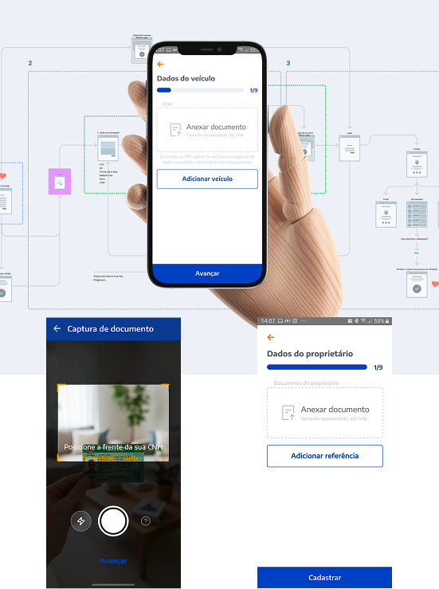
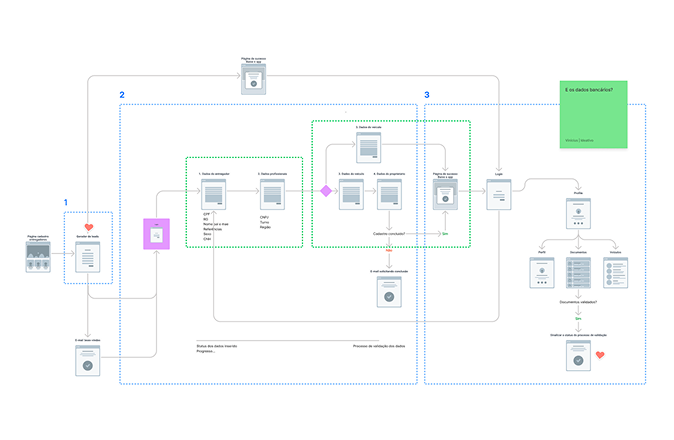
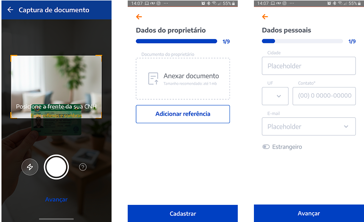
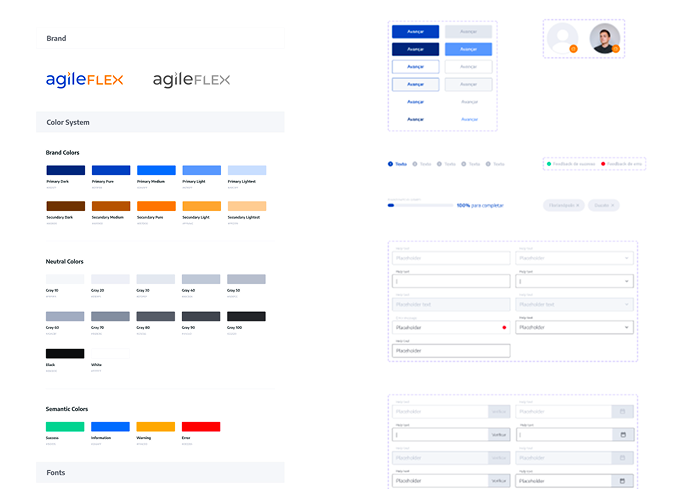

Aprovação sem clareza
Entregadores esperavam pela análise de documentos sem saber quando receberiam uma resposta ou por que um cadastro poderia ser recusado.
Pesquisei a rotina dos entregadores e apoiei a evolução da jornada de cadastro, combinando UX e recursos de automação para organizar a coleta de informações e documentos.

O cadastro precisava reunir informações e documentos importantes para a segurança e o compliance. Ao mesmo tempo, entregadores lidavam com pouco tempo, rotinas em movimento e diferentes condições de acesso à internet e aos próprios documentos.
O desafio era equilibrar as necessidades da operação com uma experiência que ajudasse o entregador a entender o processo e avançar pelas etapas.
Ouvimos 10 motoristas e entregadores para compreender como usam plataformas de entrega, quais dificuldades enfrentam e o que influencia sua confiança e seu engajamento com uma empresa. Os relatos trouxeram questões que começavam antes mesmo da primeira entrega: envio de documentos, espera pela aprovação, falta de informação sobre o andamento do cadastro e dificuldade para obter suporte.
Entregadores esperavam pela análise de documentos sem saber quando receberiam uma resposta ou por que um cadastro poderia ser recusado.
O envio podia ser complicado, especialmente quando os arquivos eram digitais ou a plataforma exigia fotos e formatos específicos.
Pedidos de documentos por canais como WhatsApp geravam insegurança. Os entrevistados valorizavam saber com quem falavam e manter informações e conversas em um canal confiável.
Pedir todas as informações logo no primeiro contato podia tornar o cadastro pesado. A oportunidade era organizar a coleta em etapas: começar pelo essencial para o avanço inicial e solicitar informações e documentos adicionais conforme a jornada progredisse.
Essa abordagem ajudava a aproximar os requisitos de segurança do momento em que seriam necessários, tornando o processo mais compreensível para quem estava se cadastrando.
Redesenhamos a lógica do onboarding para distribuir a coleta de informações ao longo do processo, em vez de concentrar todas as exigências no início.

Os materiais do projeto descrevem o uso de OCR para apoiar a leitura de documentos e de reconhecimento facial com biometria para validação de identidade.

O trabalho incluiu imersão no cadastro de entregadores, levantamento de requisitos, wireframes e evolução de experiências relacionadas ao cadastro em diferentes contextos de uso.

O projeto reuniu pesquisa qualitativa com entregadores, investigação do fluxo de cadastro, levantamento de requisitos, desenho de wireframes e exploração de recursos de automação documental.
10 entrevistas concluídas
Com motoristas e entregadores de plataformas de logística.
As entrevistas ajudaram a identificar pontos de fricção ligados a documentos, aprovação, suporte e confiança. Os registros disponíveis não trazem métricas de antes e depois para quantificar mudanças em abandono, conversão, tempo de cadastro ou custo operacional.
Tecnologia ajuda a escalar o processo. UX ajuda a fazer esse processo funcionar para quem precisa atravessá-lo.